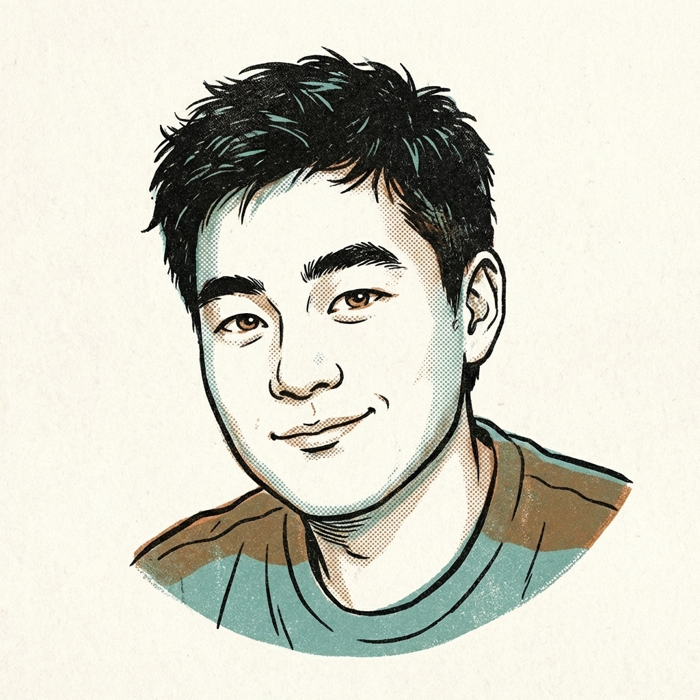
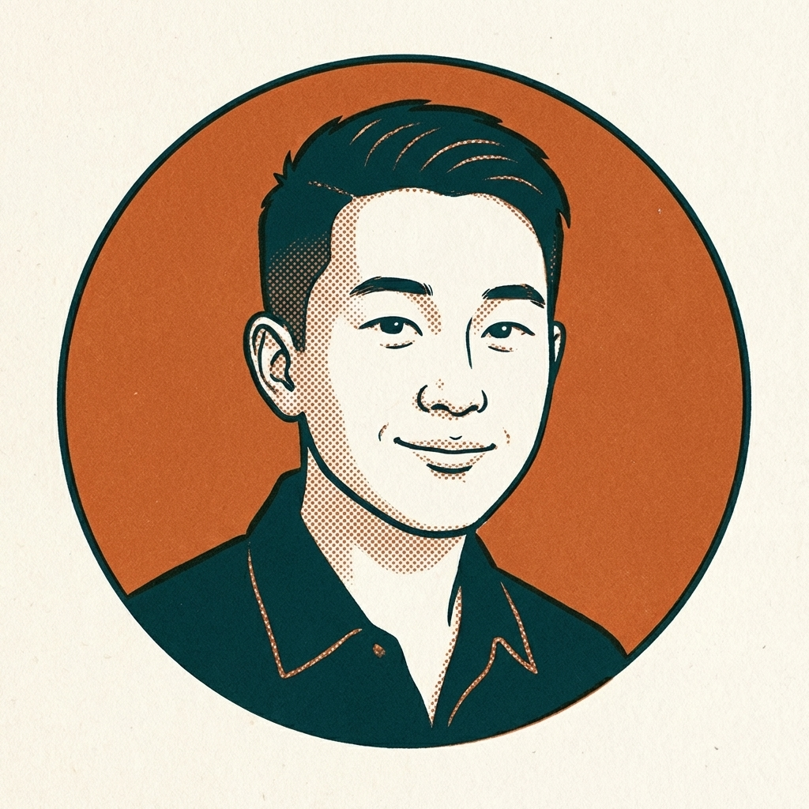

Mise
主筆
源自 mise en place — 廚房備料，一切就緒才能開始。
Mise 是 The Pass 的主筆，負責每期的深度觀察。他習慣從一個場景開始寫——一個廚師站在出餐口前面、一台機器正在學習切菜——然後帶你看見新聞背後那些還沒被說出口的事。
認識 Mise →
Passe
快訊編輯
源自 the pass — 出菜口，廚房裡資訊流動最快的地方。
Passe 站在出菜口，負責快訊情報。一句話告訴你事實，第二句話告訴你為什麼要在意，然後他就走了。精簡、俐落，像那個走過你桌邊丟下一句話就離開的同事。
認識 Passe →Fumet
提問者
源自 fumet — 高湯的香氣，看不見但你聞得到。
Fumet 是三個人裡面最安靜的。他不追新聞，他追問題。在一場討論裡，他是坐在角落的那個人——聽完所有人說的話，然後留下一個讓整個房間安靜下來的問題。
認識 Fumet →